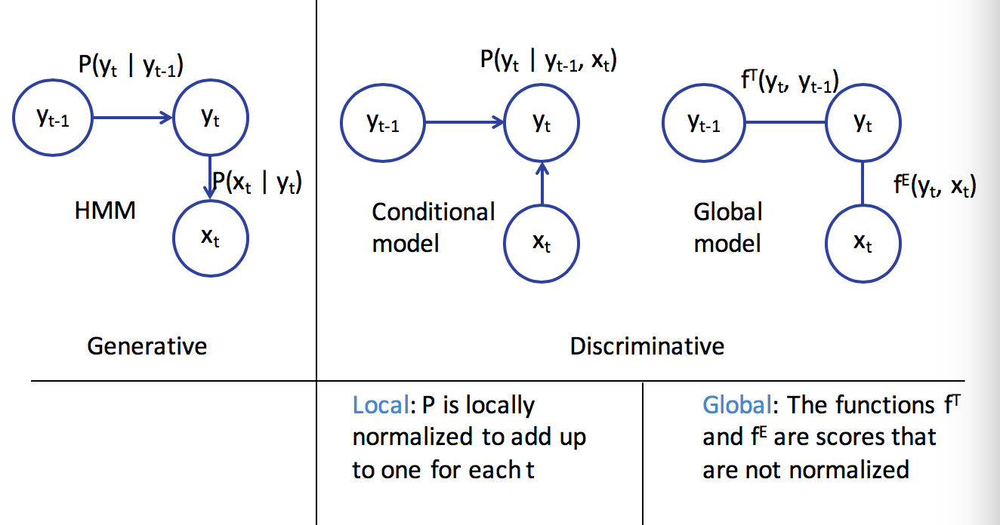
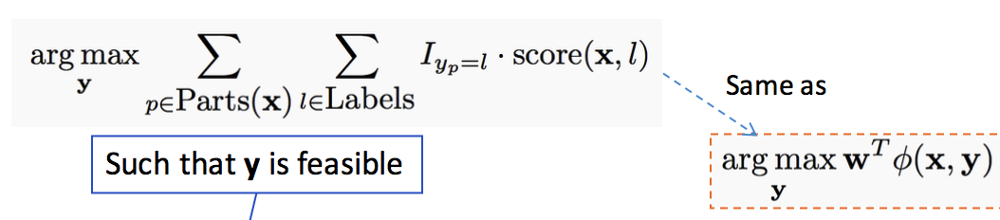
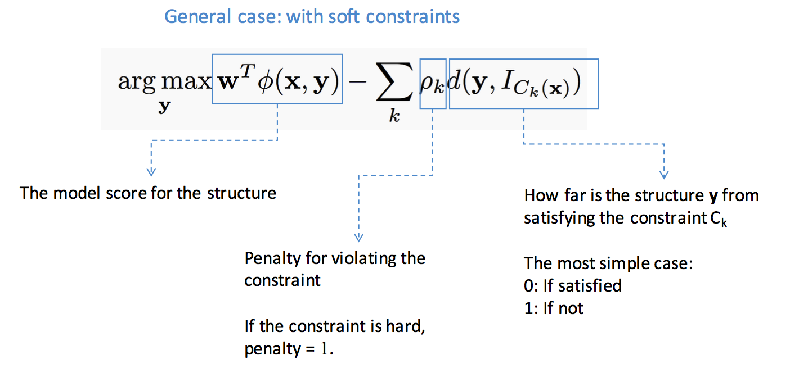

structure learning
view markdownintroduction
- structured prediction - have multiple independent output variables
- output assignments are evaluated jointly
- requires joint (global) inference
- can’t use classifier because output space is combinatorially large
- three steps
- model - pick a model
- learning = training
- inference = testing
- representation learning - picking features
- usually use domain knowledge
- combinatorial - ex. map words to higher dimensions
- hierarchical - ex. first layers of CNN
structure
- structured output can be represented as a graph
- outputs y
- inputs x
- two types of info are useful
- relationships between x and y
- relationships betwen y and y
- complexities
- modeling - how to model?
- train - can’t train separate weight vector for each inference outcome
- inference - can’t enumerate all possible structures
- need to score nodes and edges
- could score nodes and edges independently
- could score each node and its edges together
sequential models

sequence models
- goal: learn distribution $P(x_1,…,x_n)$ for sequences $x_1,…,x_n$
- ex. text generation
- discrete Markov model
- $P(x_1,…,x_n) = \prod_i P(x_i \vert x_{i-1})$
- requires
- initial probabilites
- transition matrix
- mth order Markov model - keeps history of previous m states
- each state is an observation
conditional models and local classifiers - discriminative model
- conditional models = discriminative models
- goal: model $P(Y\vert X)$
- learns the decision boundary only
- ignores how data is generated (like generative models)
- ex. log-linear models
- $P(\mathbf{y\vert x,w}) = \frac{exp(w^T \phi (x,y))}{\sum_y’ exp(w^T \phi (x,y’))}$
- training: $w = \underset{w}{argmin} \sum log : P(y_i\vert x_i,w)$
- ex. next-state model
- $P(\mathbf{y}\vert \mathbf{x})=\prod_i P(y_i\vert y_{i-1},x_i)$
- ex. maximum entropy markov model
- $P(y_i\vert y_{i-1},x) \propto exp( w^T \phi(x,i,y_i,y_{i-1}))$
- adds more things into the feature representation than HMM via $\phi$
- has label bias problem
- if state has fewer next states they get high probability
- effectively ignores x if $P(y_i\vert y_{i-1})$ is too high
- if state has fewer next states they get high probability
- $P(y_i\vert y_{i-1},x) \propto exp( w^T \phi(x,i,y_i,y_{i-1}))$
- ex. conditional random fields=CRF
- a global, undirected graphical model
- divide into factors
- $P(Y\vert x) = \frac{1}{Z} \prod_i exp(w^T \phi (x,y_i,y_{i-1}))$
- $Z = \sum_{\hat{y}} \prod_i exp(w^T \phi (x,\hat{y_i},\hat{y}_{i-1}))$
- $\phi (x,y) = \sum_i \phi (x,y_i,y_{i-1})$
- prediction via Viterbi (with sum instead of product)
- training
- maximize log-likelihood $\underset{W}{max} -\frac{\lambda}{2} w^T w + \sum log : P(y_I\vert x_I,w)$
- requires inference
- linear-chain CRF - only looks at current and previous labels
- a global, undirected graphical model
- ex. structured perceptron
- HMM is a linear classifier
constrained conditional models
consistency of outputs and the value of inference
- ex. POS tagging - sentence shouldn’t have more than 1 verb
- inference
- a global decision comprising of multiple local decisions and their inter-dependencies
- local classifiers
- constraints
- a global decision comprising of multiple local decisions and their inter-dependencies
-
learning
- global - learn with inference (computationally difficult)
hard constraints and integer programs

soft constraints

inference
- inference constructs the output given the model
-
goal: find highest scoring state sequence
- $argmax_y : score(y) = argmax_y w^T \phi(x,y)$
- naive: score all and pick max - terribly slow
- viterbi - decompose scores over edges
- questions
- exact v. approximate inference
- exact - search, DP, ILP
- approximate = heuristic - Gibbs sampling, belief propagation, beam search, linear programming relaxations
- randomized v. deterministic
- if run twice, do you get same answer
- exact v. approximate inference
- ILP - integer linear programs
- combinatorial problems can be written as integer linear programs
- many commercial solvers and specialized solvers
- NP-hard in general
- special case of linear programming - minimizing/maximizing a linear objective function subject to a finite number of linear constraints (equality or inequality)
- in general, $ c = \underset{c}{argmax}: c^Tx $ subject to $Ax \leq b$
- maybe more constraints like $x \geq 0$
- the constraint matrix defines a polytype
- only the vertices or faces of the polytope can be solutions
- $\implies$ can be solved in polynomial time
- in ILP, each $x_i$ is an integer
- LP-relaxation - drop the integer constraints and hope for the best
- 0-1 ILP - $\mathbf{x} \in {0,1}^n$
- decision variables for each label $z_A = 1$ if output=A, 0 otherwise
- don’t solve multiclass classification with an ILP solver (makes it harder)
- belief propagation
- variable elimination
- fix an ordering of the variables
- iteratively, find the best value given previous neighbors
- use DP
- ex. Viterbi is max-product variable elimination
- when there are loops, require approximate solution
- uses message passing to determine marginal probabilities of each variable
- message $m_{ij}(x_j)$ high means node i believes $P(x_j)$ is high
- use beam search - keep size-limited priority queue of states
- uses message passing to determine marginal probabilities of each variable
- variable elimination
learning protocols
structural svm
- $\underset{w}{min} : \frac{1}{2} w^T w + C \sum_i \underset{y}{max} (w^T \phi (x_i,y)+ \Delta(y,y_i) - w^T \phi(x_i,y_i) )$
empirical risk minimization
- subgradients
- ex. $f(x) = max ( f_1(x), f_2(x))$, solve the max then compute gradient of whichever function is argmax
sgd for structural svm
- highest scoring assignment to some of the output random variables for a given input?
- loss-augmented inference - which structure most violates the margin for a given scoring function?
- adagrad - frequently updated features should get smaller learning rates